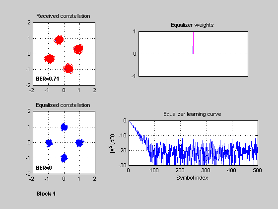

This script simulates a communication link with PSK modulation, raised-cosine pulse shaping, multipath fading, and adaptive equalization.
It is the second of two parts: Part I (adapteqpt1.m) sets simulation parameters and creates channel and equalizer objects. Part II (adapteqpt2.m) performs a link simulation based on these settings, which are stored in the MATLAB workspace. Part I sets up three equalization scenarios, and calls Part II for each of these. For information on the Part I script, enter demo('toolbox','comm') at the MATLAB prompt, and select "Adaptive Equalizer Simulation (Part I)". To experiment with simulation settings, you can edit the Part I script.
This script uses the following auxiliary functions:
adapteq_pulsefilter: Filter a signal with a pulse filter.
adapteq_pskdetect: Detect PSK signal and perform error calculations.
adapteq_graphics: Visualize signal processing and performance.
adapteq_checkvars: Check for workspace variables (see next section).This script uses the following variables in the MATLAB workspace.
M: Modulation order
nPayload: Number of payload data symbols
xTrain: Training sequence (before payload)
xTail: Tail sequence (after payload)
txFilt: Structure containing transmit filter information
rxFilt: Structure containing receive filter information
chan: Channel object
snrdB: Average signal-to-noise ratio (dB)
eqObj: Equalizer object
simName: Name of simulation (for figure window name)
block: Current transmission block number (use 1 for first call)The adapteq_checkvars function checks if the above workspace variables exist. If not, it creates a default set corresponding to the first scenario of Part I. The adapteq_checkvars function also displays the channel and equalizer objects if the variable 'block' is equal to 1.
adapteq_checkvars;
chan =
ChannelType: 'Rayleigh'
InputSamplePeriod: 5.0000e-007
MaxDopplerShift: 20
PathDelays: 0
AvgPathGaindB: 0
NormalizePathGains: 1
PathGains: 0.3099- 0.9074i
ChannelFilterDelay: 0
ResetBeforeFiltering: 0
NumSamplesProcessed: 0
eqObj =
EqType: 'Linear Equalizer'
AlgType: 'LMS'
nWeights: 1
nSampPerSym: 1
RefTap: 1
SigConst: [1x4 double]
StepSize: 0.0300
LeakageFactor: 1
Weights: 0
WeightInputs: 0
ResetBeforeFiltering: 1
NumSamplesProcessed: 0
Generate payload data and PSK symbols. Prefix these symbols with a training sequence, and append a tail sequence.
payloadData = randint(1, nPayload, M); % Payload data xPayload = pskmod(payloadData, M); % Payload symbols x = [xTrain xPayload xTail]; % Transmitted block
Pass symbols through a pulse shaping transmit filter. This process also involves upsampling using an efficient polyphase filter implementation (see auxiliary function adapteq_pulsefilter.m). The transmitted signal is then passed through a multipath channel and a receive filter matched to the transmit filter response. The receive filtering downsamples using an efficient polyphase filter implementation. The variables txFilt and rxFilt are passed out of the adapteq_pulsefilter functions because they are structures that retain states between calls.
[txSig, txFilt] = adapteq_pulsefilter(x, txFilt); % Transmit filter rxSig = awgn(filter(chan, txSig), snrdB); % Multipath channel and AWGN [filtSig, rxFilt] = adapteq_pulsefilter(rxSig, rxFilt); % Receiver filter
Select training/payload samples, accounting for filter delay and equalizer delay.
nTrain = length(xTrain); % Number of training symbols filterDelay = (length(txFilt.Coeff) + length(rxFilt.Coeff) - 2)/2; eqDelay = eqObj.RefTap - 1; % Delay of equalizer (in samples) nSamples = eqObj.nSampPerSym*(nTrain + nPayload) + eqDelay; rxSamples = filtSig(filterDelay/rxFilt.DownsampleFactor + (1:nSamples));
Downsample to symbol rate and use PSK detection without equalization. We use the auxiliary function adapteq_pskdetect.m because we want do a similar operation after equalization (see next section). In addition to detecting data and computing the BER, this function also returns indices for the symbols corresponding to bit errors (these indices are stored in yErr0).
rxSamples0 = downsample(rxSamples, eqObj.nSampPerSym); % Symbol rate yPayload0 = rxSamples0(nTrain + (1:nPayload)); % Payload samples [rxdata0, BER0, yErr0] = adapteq_pskdetect(... yPayload0, xPayload, payloadData, M);
Equalize using equalizer object. Select payload samples and use PSK detection as above.
[y, yd, err] = equalize(eqObj, rxSamples, xTrain);
yPayload = y(nTrain + eqDelay/eqObj.nSampPerSym + (1:nPayload));
[rxData, BER, yErr] = adapteq_pskdetect(...
yPayload, xPayload, payloadData, M);
Plot results (see auxiliary function adapteq_graphics.m). The red circles in the signal constellation plots correspond to symbol errors. In the "Weights" plot, blue and magenta lines correspond to real and imaginary parts, respectively.
adapteq_graphics(yPayload0, yErr0, BER0, ... yPayload, yErr, BER, ... err, eqObj.weights, ... simName, block);